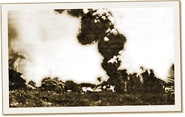
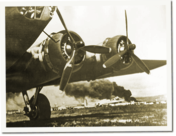

|
j
a v a s c r i p t |
December 9, 1941

Nielson Collateral Damage
Everyone was up early despite a lack of sleep. The last air-raid signal had been at 0700 but Manila wasn’t the target. For most of us, the Nichols bombing was our first experience of war. Much talk all day was of the Clark debacle. I spent the morning at the office battling to get a plain-English cable through the censor and waiting for news. Special Editions of the local papers headlined the war. The Manila Tribune’s trumpeted: “Japan Announce Battle of Navies in West Pacific.” Only it wasn’t a battle; Pearl was caught with its pants down, as was Clark. MacArthur appealed for calm. Ever the diplomat, he praised the populace for its “poise and self-control” in the long lead up to war. “The military is on the alert,” he said. “Every possible defense measure is being undertaken.”

B-17D at Clark
The Bulletin had an eyewitness account of the raid on Fort Stotsenburg (adjoining Clark Field). It started at two to three minutes before noon. Nine or eleven groups of five to seven planes suddenly appeared and bombed the airfield and buildings from 20,000 feet. The Americans fired back with at most a couple of AA guns. Minutes later, fighters arrived and spent almost 45 minutes strafing the field without any opposition. No American planes took to the air. When it was over, the whole camp was “in conflagration.” So far the Japanese have bombed the airfields at Clark, Iba, Nichols, Nielson and probably Zablan and Tuguegarao, plus Stotsenburg, Fort McKinley, Baguio’s Camp John Hay, Aparri and Davao. The latter was hit first at 0630. Leaflets dropped over La Union said the Japanese aimed to affect a “permanent peace”; that the conflict was only between Japan and the U.S. Well, Singapore has been bombed, the Japanese have landed in Malaya, and Thailand capitulated within five hours. If that’s not enough, Chungking reported the Japanese have a thousand planes in Formosa, Hainan and French Indo-China, and our planes have spotted two Japanese convoys in the Gulf of Siam. Our roads are now busy day-and-night with northbound troops and thousands of evacuating Manilans. Around 33,000 residents have already left and another 164,000 are getting ready. With gas becoming hard to get, Maurice also bought a bike. |
|
|
|
|